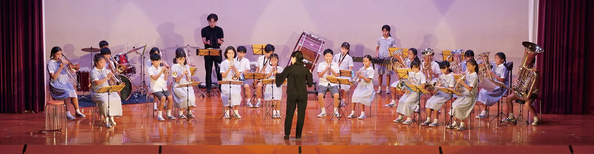
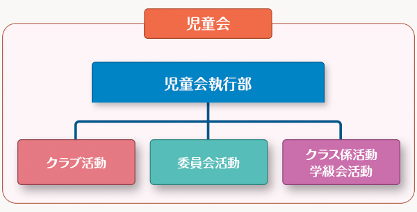
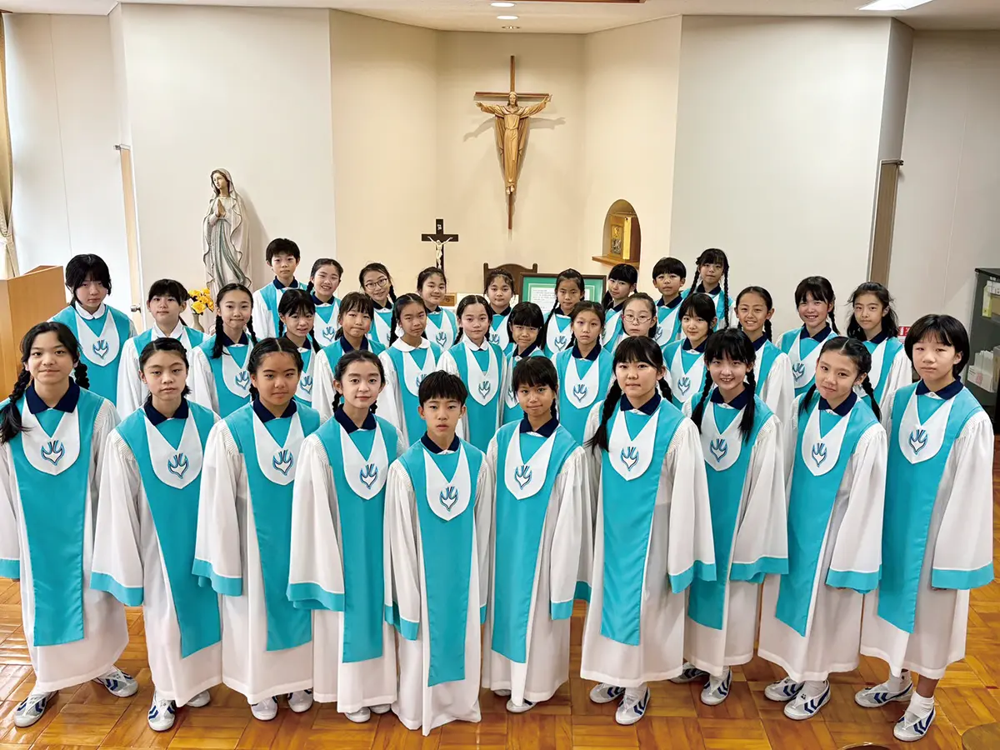
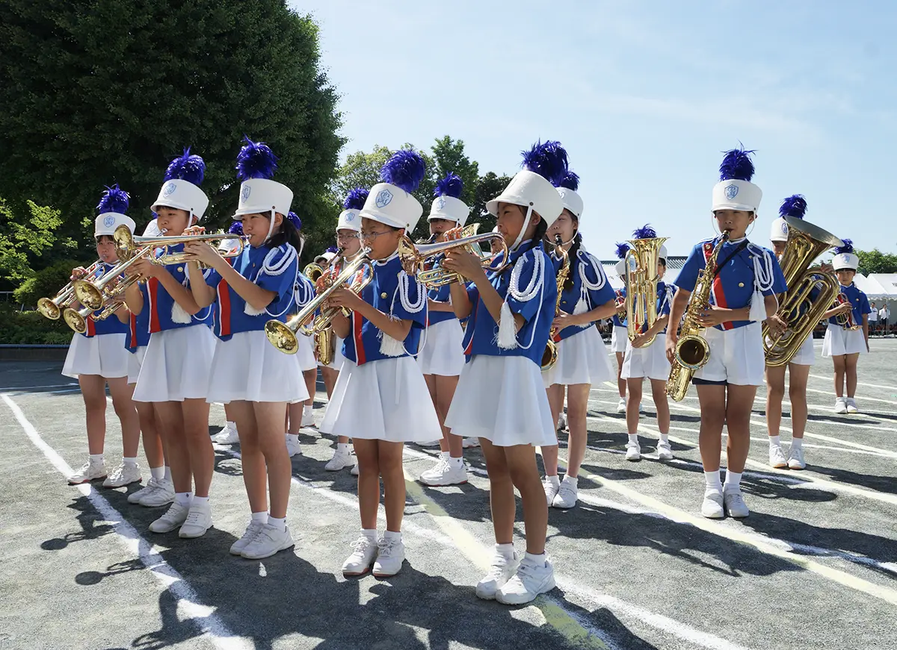

星美クラスの子どもたちは、さまざまな委員会・クラブ活動を通じて、学年を超えて活動をともにしています。
仲間と力を合わせて目標に向かうことで自身を鍛え、心の豊かな人間形成を目指しています。
星美クラスの委員会、クラブは、学校全体からクラス単位までさまざまなシーンで活躍しています。
組織としては児童会 執行部、クラス係活動・学級会、委員会活動、クラブ活動と続き、それぞれが自分たちの役割を認識し、学校運営の柱となっています。
また、学年を越えて活動を共にするため、上級生は思いやりの心が育まれ、下級生は上級生のようになりたいという目標がうまれます。

特別音楽クラブは、音楽活動を通じて心を耕し、仲閒と力をあわせて表現活動を追求する中で、自分自身を鍛え、 心の豊かな人間形成を目指しています。
特別音楽クラブの活動を通して音楽の楽しさ、素晴らしさを感じられる心を育て、創立者"聖ドン・ボスコ"の教育理念に生きる。
神からいただいた賜物（タレント）を活かし、音楽を通じて神への賛美と人々への奉仕に生きる。
音楽活動を通して、自分を生かす事や協力する心を育てる。
学校行事やその他の活動に積極的に参加し、根気強さを育てる。
3年生以上の希望者で構成されています。
学校内の聖歌のリード及び宗教行事の奉仕、校内演奏会などで、多くの方に歌声を届けています。
この活動以外にも依頼を受けた演奏会や、チャレンジの場としてコンクールにも参加しています。
● 学校内宗教行事の奉仕 ● 学習発表会 ● 東初協音楽祭 ● 校内演奏会

4年生以上の希望者で構成されています。
楽器経験のある子どももそうでない子どもも、練習を積み重ね心を一つにして演奏します。
校外での演奏会出演のほか、運動会の入場行進ではマーチングを加えて会場を盛り上げます。
● 入学式 ● 学習発表会 ● 運動会 ● 東初協音楽祭 ● 校内演奏会
